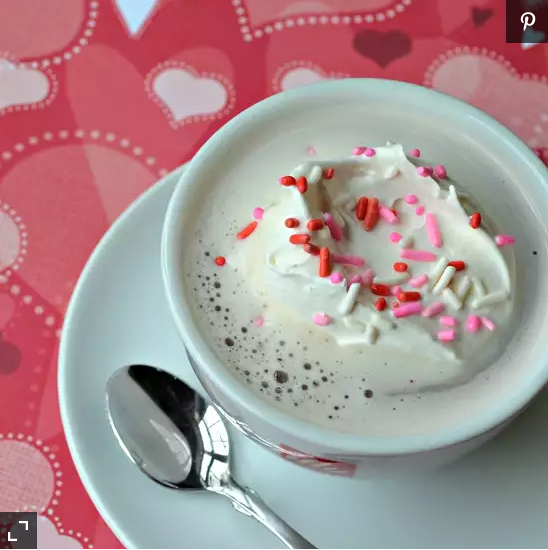

Secret Simple Hot Chocolate

I was experimenting in the kitchen with milk and sugar, when suddenly the idea of chocolate came to my mind.
I looked in the cabinet and saw a fresh bottle of chocolate syrup.
I added it to my hot cup of milk and sugar and ta-da! Secret simple hot chocolate!
Add marshmallows, whipped cream, or Cool Whip® to make even tastier.
Ingredients
- 2/3 cup milk
- 1/4 cup white sugar
- 2 teaspoons chocolate syrup
Directions
- Stir milk and sugar together in a microwave-safe glass or mug.
Microwave until hot, about 2 minutes. Stir in chocolate syrup until completely incorporated.